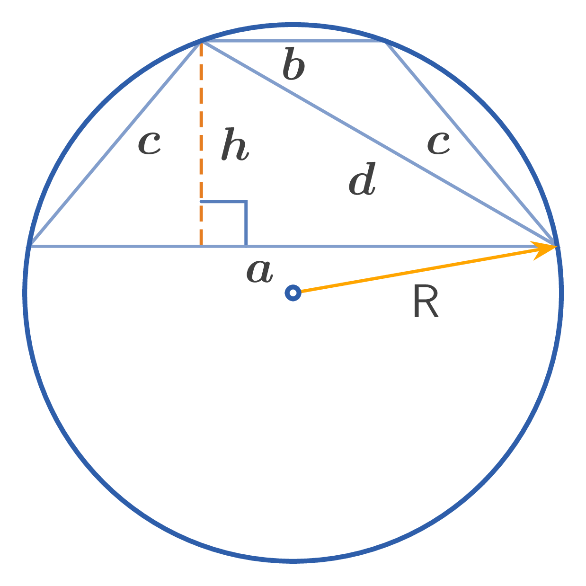

Bases of a trapezoid: $a, b$
Leg: $c$
Midline: $q$
Altitude: $h$
Diagonal: $d$
Radius of circumscribed circle: $R$
Area: $S$

1. Midline of an isosceles trapezoid: $$q = \dfrac{a+b}{2}$$
2. Diagonal of an isosceles trapezoid: $$d = \sqrt{ab + c^{2}}$$
3. Altitude of an isosceles trapezoid: $$h = \sqrt{c^{2} - \dfrac{1}{4}(b-a)^{2}}$$
4. Radius of the circumscribed circle: $$R = \dfrac{c\sqrt{ab + c^{2}}}{\sqrt{(2c - a + b)(2c + a - b)}}$$
5. Area of an isosceles trapezoid: $$S = \dfrac{a+b}{2} \cdot h = qh$$